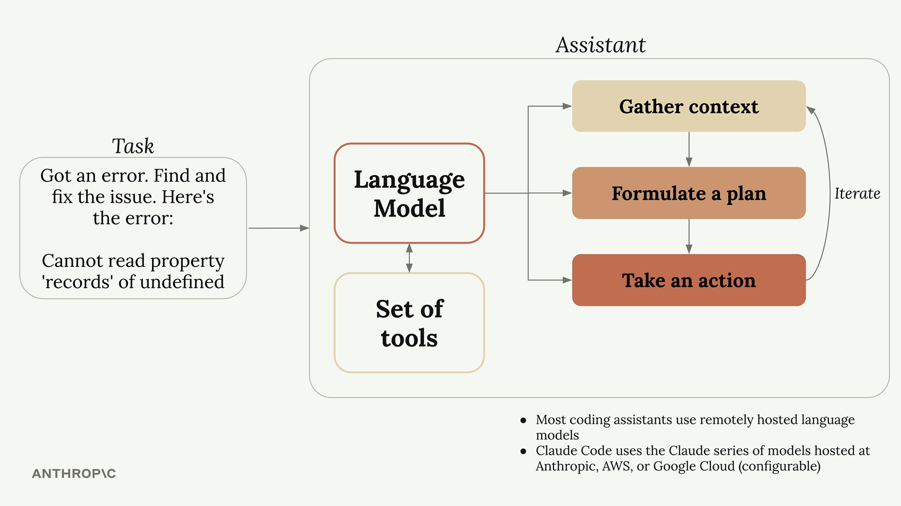
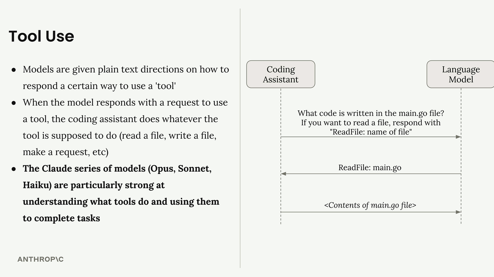

编码助手不仅仅是写代码的工具——它是一个使用语言模型来处理复杂编程任务的系统。了解它们在幕后 如何运作，能帮助你理解什么才是真正强大的编码伙伴。
编码助手如何工作
当你给编码助手一个任务（例如根据报错修复 Bug），它会按类似人类开发者的方式来推进：

- 收集上下文：理解错误指向什么、哪些文件受影响、哪些文件相关
- 制定计划：决定如何解决问题，例如修改代码并运行测试验证
- 采取行动：真正去修改文件、运行命令并完成修复
关键洞见在于：第一步和最后一步都需要与外部世界交互——读文件、查文档、运行命令、编辑代码等。
工具使用的挑战
语言模型本身只能处理文本、输出文本，无法真正读取文件或运行命令。如果你直接让一个独立语言模型去 读文件，它会告诉你自己没有这个能力。
那编码助手如何解决？它们使用一种巧妙的系统，叫作“工具使用”。
工具使用如何运作
当你向编码助手发送请求时，它会自动在消息中加上一些指令，教模型如何请求动作。比如它可能加上： “如果你想读文件，请回复 ‘ReadFile: 文件名’”。
完整流程如下：
- 你提问：“main.go 文件里写了什么代码？”
- 编码助手为你的请求添加工具指令
- 语言模型回应：“ReadFile: main.go”
- 编码助手读取真实文件内容并回传给模型
- 语言模型基于文件内容给出最终答案
这套机制让语言模型“看起来”能够读文件、写代码、运行命令——实际上它只是生成了格式化的文本响应。
为什么 Claude 的工具使用很关键
不是所有语言模型都擅长使用工具。Claude 系列模型（Opus、Sonnet、Haiku）在理解工具、调用工具方面 尤其强。

强工具使用带来的好处包括：
强工具使用的收益
- 更难的任务也能完成：Claude 能组合多种工具，甚至使用从未见过的新工具
- 平台可扩展：你可以轻松为 Claude Code 增加新工具，Claude 会自适应你的流程
- 更好的安全性：无需索引代码库即可导航，避免将整个代码库发送到外部服务器
要点回顾
理解编码助手的关键在于：
- 编码助手通过语言模型完成任务
- 语言模型需要工具才能处理真实世界的编程问题
- 不同模型的工具使用能力差异很大
- Claude 的工具使用能力提升了安全性、可定制性与长期可用性
正是这种工具使用能力，将一个只会生成文本的模型，转变成能读文件、理解代码库并实际修改项目的强大 编码助手。